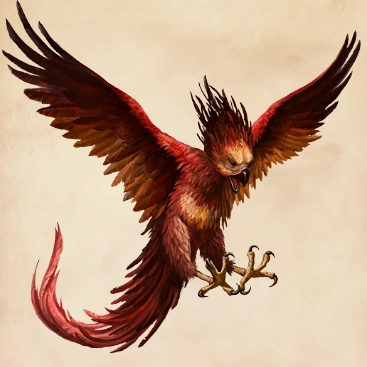

ニフラー
突き出た鼻とふわふわした黒い体毛が特徴の生物である。ニフラーは輝くものに惹きつけられる性癖があるため、宝物を探すのにもってこいだが、室内で飼ったり放し飼いにすると大混乱を引き起こす恐れがある。

ヒッポグリフ
前足、翼、巨大なワシの頭、胴体、後ろ足、ウマの尾を持つ魔法動物である。これは馬の後半身の代わりにライオンの後半身を持つ神話の動物グリフィンに似ている。

グリフィン
原産地がギリシャの魔法動物で、前足と頭は鷲、胴体と後足はライオンである。

不死鳥
白鳥大の真紅の鳥で、金色の長い尾とかぎ爪を持つ。黒い目をしていて、尾は孔雀と同じくらい長い。羽は闇の中で輝き、尾は熱を持っている。